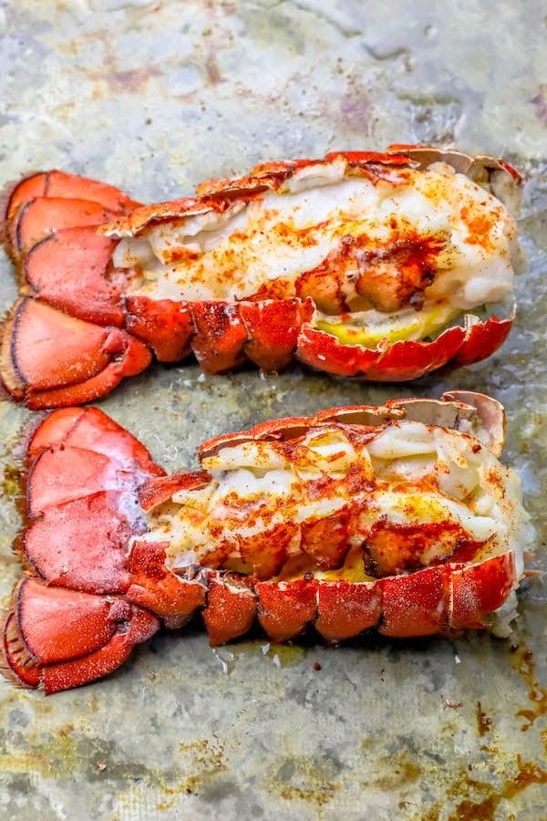

Lobster Tails
"
Amazing meal for a romantic night in! Pairs well with your choice of cut Steak and Asparagus.
Ingredients:
- 2 Lobster tails (about 6 oz each)
- Pinch celtic sea salt
- 1 teaspoon smoked paprika
- 1 teaspoon garlic powder
- 1/2 teaspoon white pepper
Instructions:
- Preheat broiler to high.
- Set lobster tails on a baking sheet or in an oven safe dish.
- With sharp kitchen scissors or a knife, carefully cut the top of the lobster tail shell down to the tip of the tail, avoiding the meat. Devein and remove any grit if needed.
- Carefully pull shell down, so meat looks like it is sitting on top of shell and open.
- To make it look even better, slide a lemon wedge or two under the lobster meat in between the meat and the tail.
- Mix spices in a small bowl.
- Sprinkle with spices.
- Add small pats of butter along the lobster tail.
- Place in oven on an upper middle rack.
- Let cook until meat is opaque and white, about 8-10 minutes.
- Remove and serve immediately with drawn butter.
Return to home